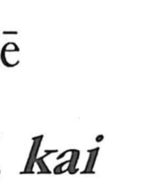

街

Uncategorized
Kun: machi, michi | On: gai, kai
street ・ city quarter
Explanation
A phono-semantic character formed with 圭 as the phonetic and 行 as the semantic core. 圭, which also marks the on-reading in characters like 厓 and 涯, originally depicted a rectangular clay tablet made from earth on which divination results were inscribed. Streets laid out in orderly, rectilinear fashion were likened to the neat grid of that tablet, hence terms such as gaido (街道) and gairo (街路) for wide, purpose-built roads. The component 行 portrays a crossroads and contributes meanings of a four-way junction, road, town, and quarter, from which the sense “street; city quarter” arises.